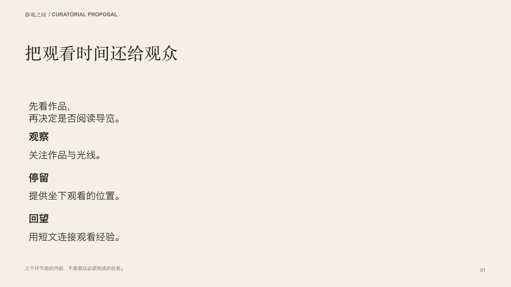
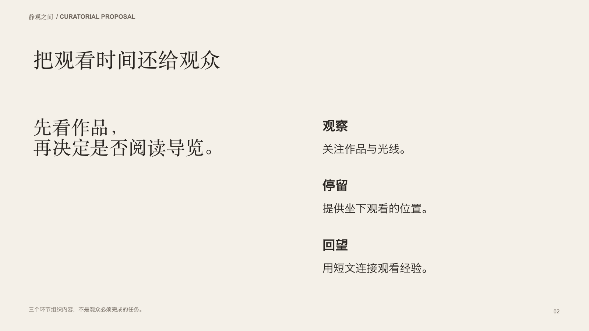
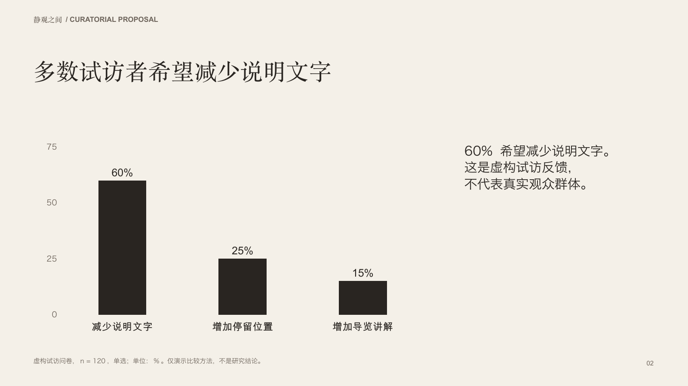
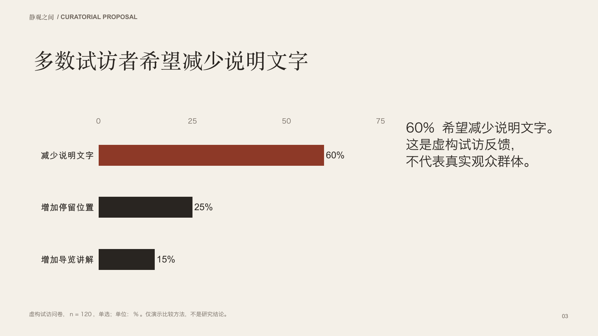
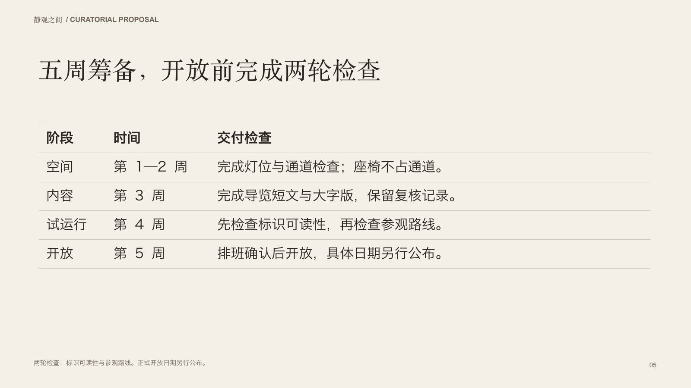
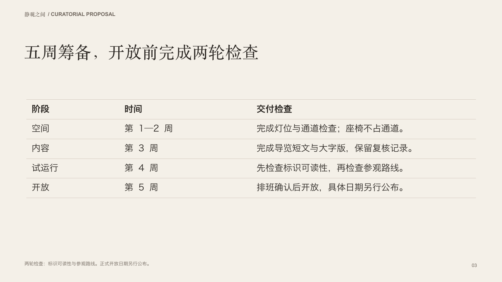

Judge the supplied brief and intended viewing conditions. Open images at readable size. In ratings.csv, enter your reviewer code, left/right/tie/unjudgeable for each criterion, and concrete observations. Leave unreviewed rows blank. Do not infer the production method. / 按任务与观看条件比较，放大看清文字。填写匿名评审编号、各项 left/right/tie/unjudgeable 及具体观察，未看过的保持空白。
策展委员会阅读 PDF：比较观看主张与三个可选内容环节的主次与阅读顺序。


策展委员会阅读 PDF：比较试访问卷，核对类别、数值、样本与限制是否清楚。


策展委员会阅读 PDF：按阶段查阅五周排期与交付检查，比较字号和对齐。

